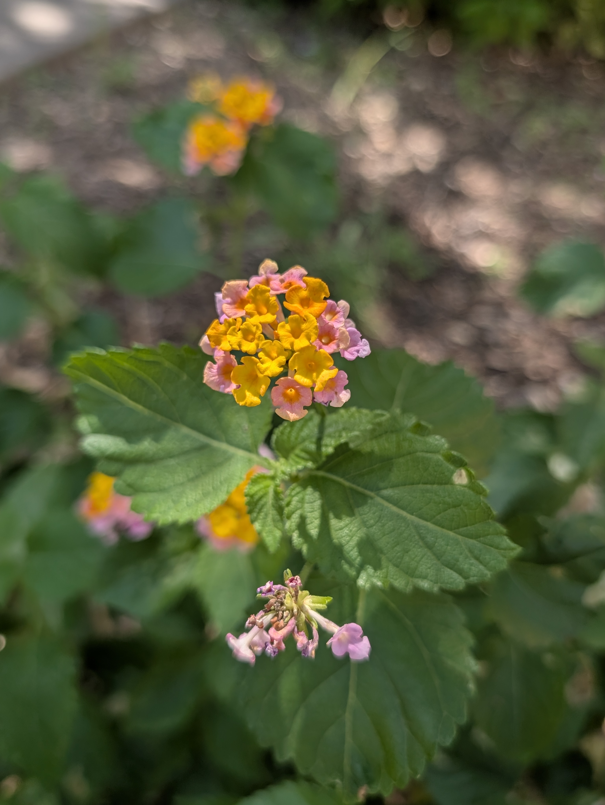
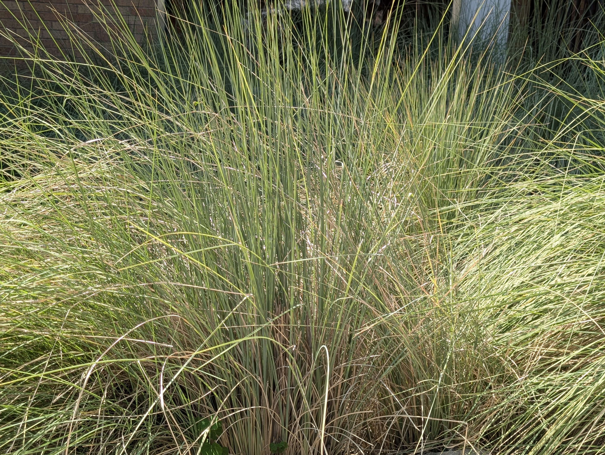
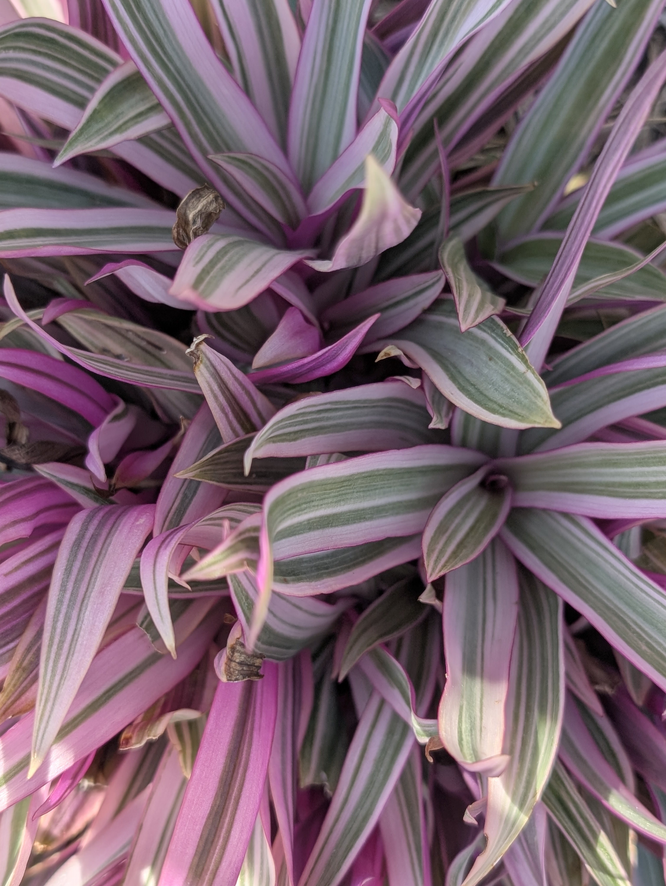
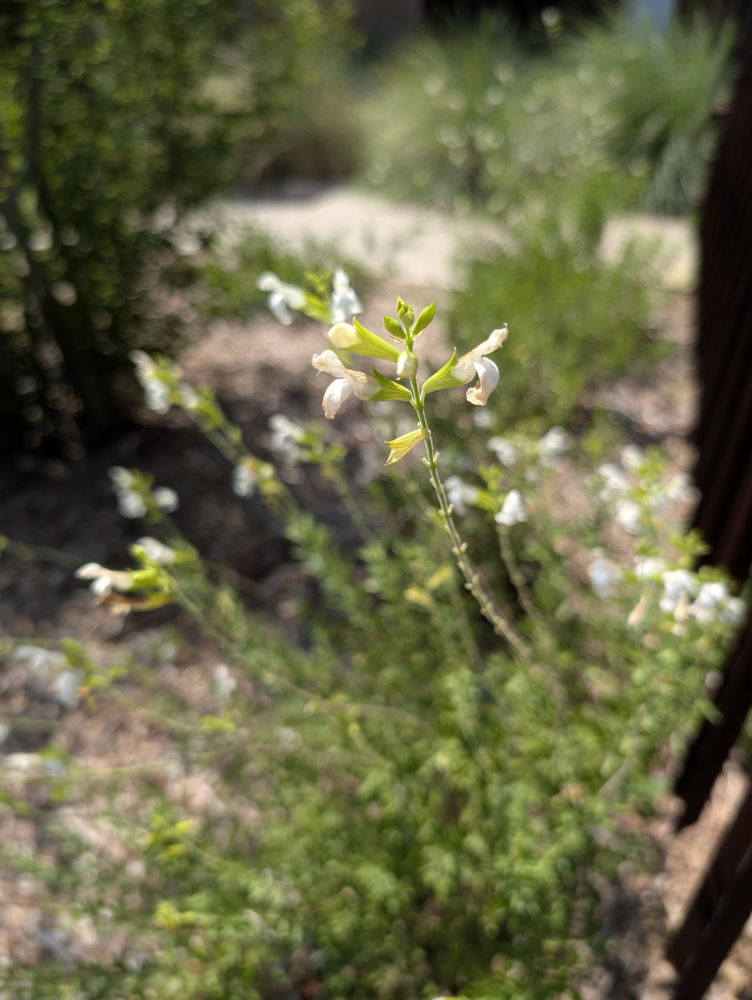
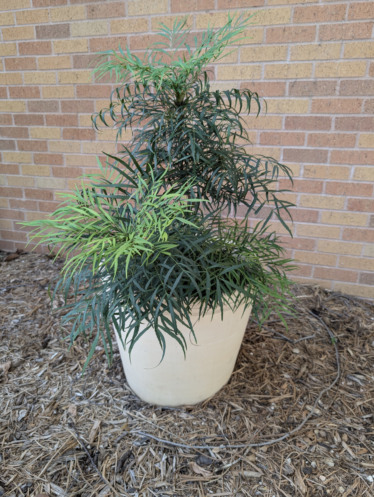
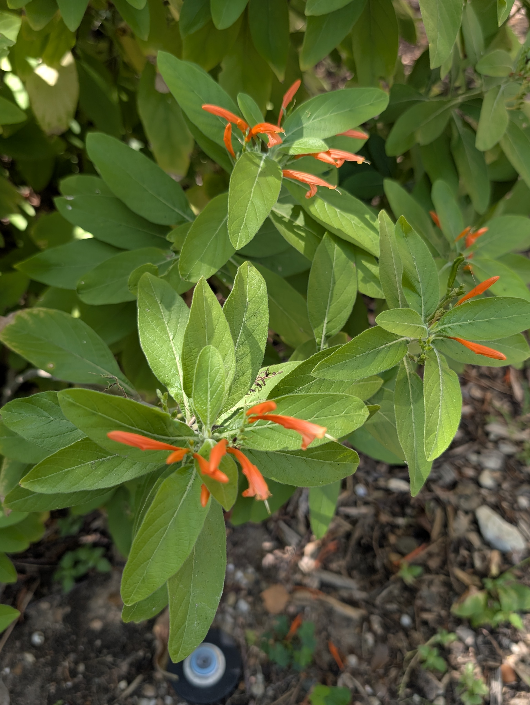
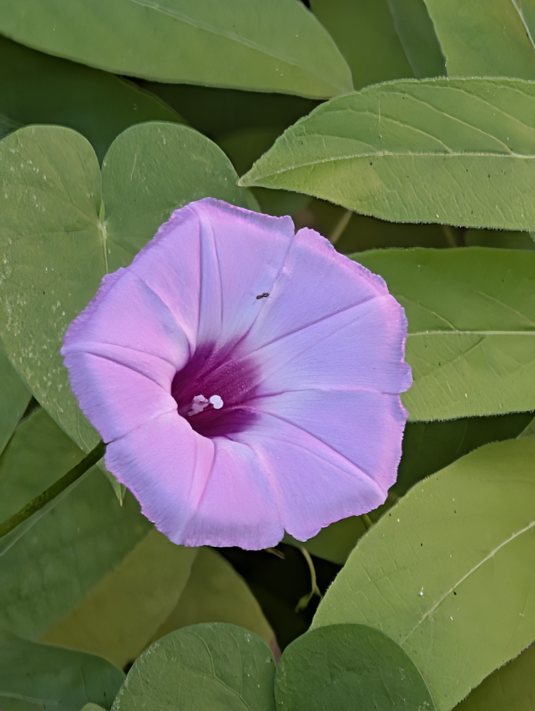
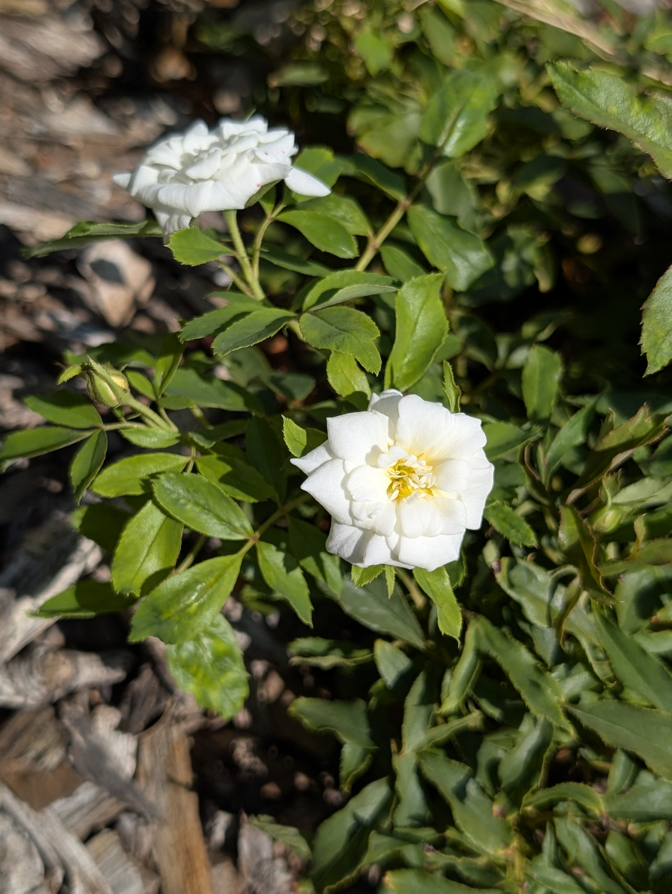

UTruffula
The inspiration behind these plants!
When exploring the Art Building's plants, I really liked the colorful
aspect of all the plants. They reminded me of the trees from The
Lorax, thus forming my theme.
To the right is a visual displaying the colors from photos that I took
of each plant. Below are the images I pulled colors from. Using a hex
code picker website, I generated 10 different colors to display in the
chart. My goal was to display the colors I thought were unique to each
plant and the colors that set them apart in terms of hues. I hand
arranged the colors instead of generating an algorithm to represent
the colors from greens (bottom) to plant specific colors that were
defined through specific features such as their petals.
Rollover the grid and see what you find!








